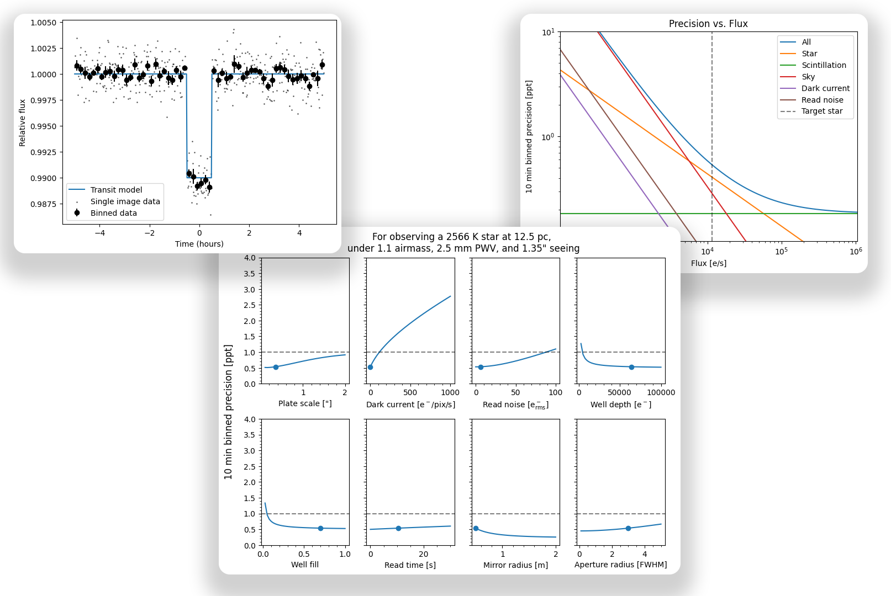

mphot#
mphot is a fast Python package to model photometry data from the ground or space.

How it works#
Simply put,
it combines user submitted [telescope * filter * camera qe] efficiencies with generic stellar models and sky transmission/radiance models (for Paranal, 2400m) to generate integrable grids of stellar fluxes and sky radiances.
Then, mphot uses the grids to interpolate between different
atmospheric parameters (PWV, airmass)
target star parameters (effective temperature + distance)
using user submitted
telescope/site parameters (primary and secondary diameters, site seeing)
camera parameters (plate scale, dark current, read noise, well depth, target well fill, read time)
to calculate ideal exposure time and expected precision for a given observation.
Please see the examples for more details on how to use mphot. For further details on the models used, please see https://doi.org/10.1117/12.3018320.
Note, it uses stellar parameters from “A Modern Mean Dwarf Stellar Color and Effective Temperature Sequence”. Temperatures between 1278 K to 3042 K are calibrated for the SPECULOOS target list and 2MASS (see Figure 4.7 in “Optimised ground-based near-infrared instrumentation for robotic exoplanet transit surveys”).
Installation#
You can install mphot in a Python (>=3.11) environment with
pip install mphot
or from a local clone
git clone https://github.com/ppp-one/mphot
pip install -e mphot
You can test the package has been properly installed with
python -c "import mphot"